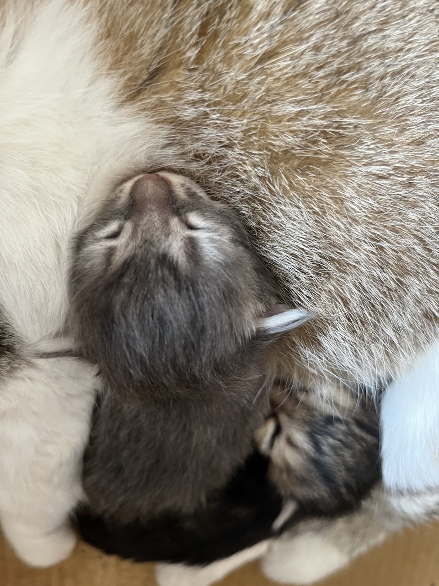
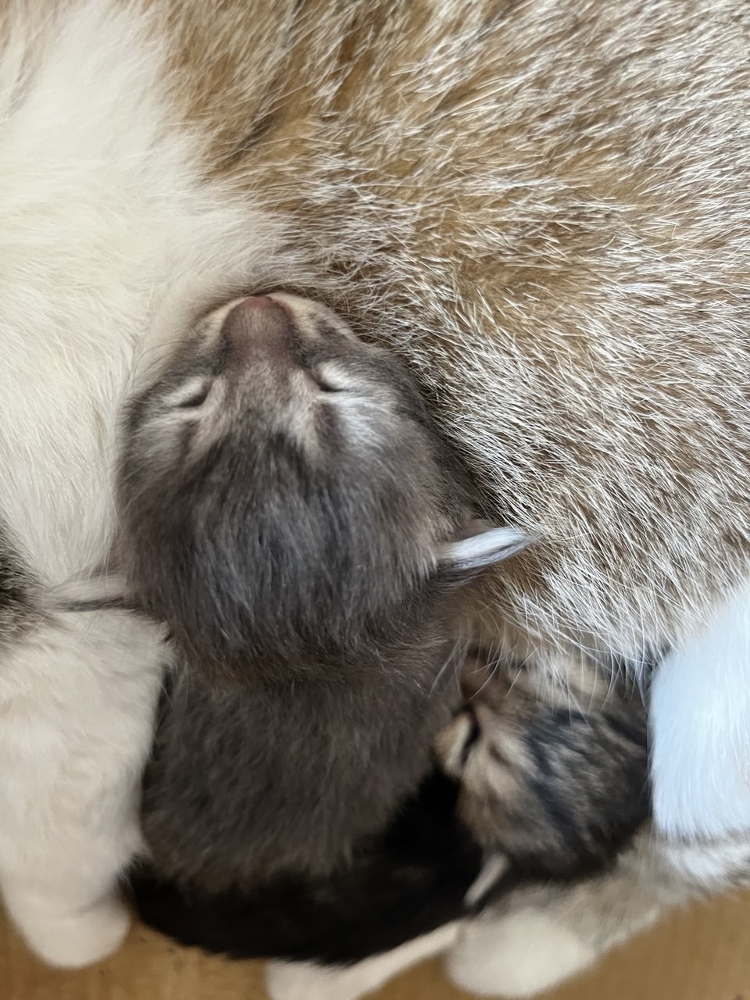

Pawareness
Pawareness
I am a passionate student and developer who uses my skills to make a difference for animals and nature. Beyond coding, I rescue stray cats, build shelters, and work to educate my community about environmental responsibility.
I believe every small action counts, and by combining technology with hands-on care, I strive to create a better world for all living beings.
I believe in rescuing stray cats by respecting their natural habitat instead of confining them to shelters. My goal is to create a safer, more welcoming environment for cats through food, medical care, and fostering understanding between humans and felines. I’m passionate about teaching kindness and coexistence, changing the view of cats as pests into one of respect.
At the same time, I promote sustainability by including recycling and environmental cleanup, because protecting animals and nature together builds a healthier Earth for all living beings.
 ¨

¨
